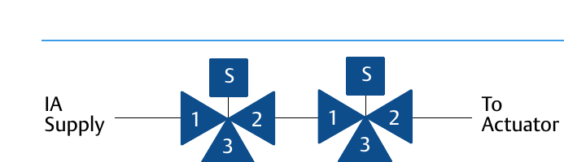
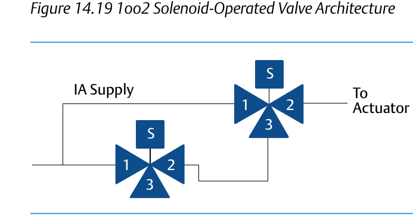

Voting Architectures: 1oo2 vs. 2oo2

One-out-of-two: either SOV seeing a demand trips the system — favors safety, at the cost of more nuisance trips from a single spurious signal.
Two-out-of-two: both SOVs must agree before the system trips — favors uptime, at the cost of a slower response if only one SOV actually fails.After Control Valve Handbook, 6th ed., Figs. 14.19, 14.20 — used directly; Fig. 14.16 introduces the 1oo2 nomenclature and is cited but not shown. Component Index: cvh-cmp-4.16, cvh-cmp-4.19, cvh-cmp-4.20.